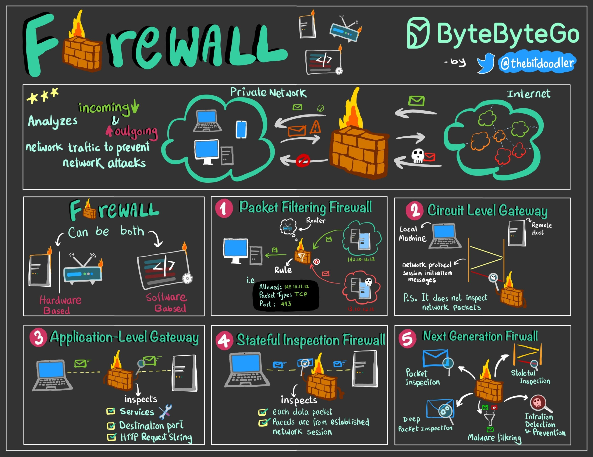

A firewall is a network security system that controls and filters network traffic, acting as a watchman between a private network and the public Internet.
They come in two broad categories:
Software-based: installed on individual devices for protection
Hardware-based: stand-alone devices that safeguard an entire network.
Firewalls have several types, each designed for specific security needs:
Examines packets of data, accepting or rejecting based on source, destination, or protocols.
Monitors TCP handshake between packets to determine session legitimacy.
Filters incoming traffic between your network and traffic source, offering a protective shield against untrusted networks.
Tracks active connections to determine which packets to allow, analyzing in the context of their place in a data stream.
Advanced firewalls that integrate traditional methods with functionalities like intrusion prevention systems, deep packet analysis, and application awareness.